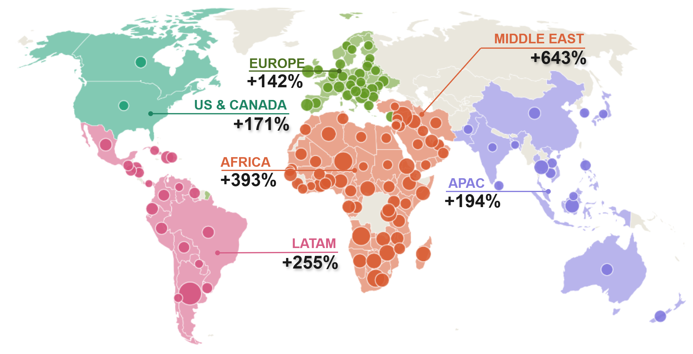
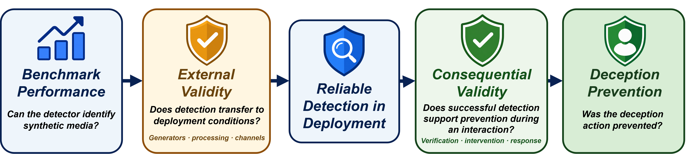
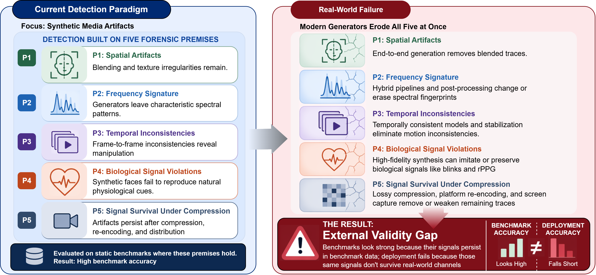
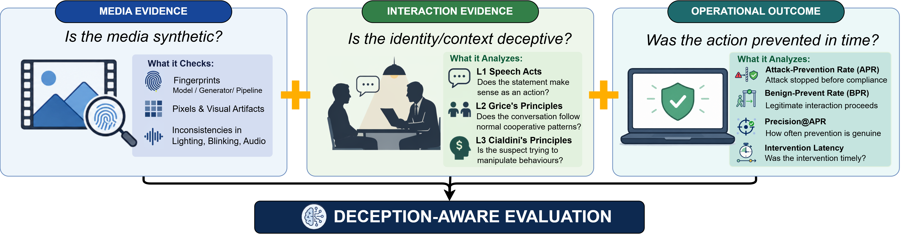

Is the media synthetic?
Synthetic-origin signals from existing forensics: fingerprints, pixel and visual artifacts, inconsistencies in lighting, blinking, or audio.
Why benchmark accuracy is not evidence of real-world prevention
Deepfake detection is typically evaluated as a media-classification task: given a clip, determine whether it is synthetic. Yet benchmark performance is increasingly invoked to support broader claims about preventing deepfake-enabled deception in video calls, voice calls, and targeted communications. We argue that these claims require evidence across two distinct validity gaps.
External validity concerns whether detection performance transfers across generators, processing pipelines, and communication channels. Consequential validity, as used here, concerns whether reliable detection translates into timely intervention and prevention of harmful actions. Even perfect synthetic-origin classification does not guarantee prevention when verification is unavailable, intervention occurs too late, or recipients disregard warnings.
We therefore propose a scenario-level evaluation framework that integrates media evidence, interaction-level indicators grounded in speech act theory, conversational pragmatics, and influence principles, and operational outcomes. We define candidate measures of attack prevention, benign pass-through, intervention precision under explicit deployment base rates, and intervention timing. Our position is that deployment-oriented evaluation must measure not only whether synthetic media is detected, but whether deception is prevented without unnecessarily disrupting legitimate interactions.
We do not claim that deception prevention is the appropriate objective for all synthetic-media applications. Standalone media classification remains important for content moderation, provenance, and forensic analysis. Our claim is narrower: when benchmark accuracy is used to support claims about preventing deepfake-enabled deception, two validity links are missing, and existing benchmarks provide limited evidence for either.
Deepfake detection shows a growing mismatch between benchmark success and real-world reliability. State-of-the-art detectors report strong performance on curated datasets such as FaceForensics++, Celeb-DF, and DeeperForensics, yet cross-distribution evaluations show substantial degradation on contemporary generators and in-the-wild media. Meanwhile, the operational stakes are rising.

Figure 1. Global growth in deepfake-driven identity fraud from 2023 to 2024 (in %). Circle size scales with country-level growth in identity fraud, while regional labels highlight growth in deepfake-specific fraud (Sumsub, 2024).
We focus on interactive deepfakes: AI-generated audio-visual impersonation used as a social-engineering mechanism in video calls, voice calls, or targeted communications, where a recipient must decide whether to trust, comply with, or act on a communication. Voice and video have traditionally served as strong identity cues in remote communication. As both can now be convincingly synthesized, users may need to judge authenticity from how the interaction unfolds, not only from how the caller looks or sounds.
In both cases, protection depended on information beyond the audio-visual signal itself.
Moving from benchmark performance to a claim of real-world deception prevention requires two distinct validity steps. Solving the first leaves the second untouched.

Figure 4. Two validity steps between benchmark performance and real-world deception prevention. External validity asks whether detection transfers to deployment conditions. Consequential validity asks whether successful detection supports prevention during an interaction.
The first step assumes that synthetic-media classification transfers from controlled benchmark data to real-world use. Whether it does depends on whether the forensic signals detectors exploit remain reliable across changes in generators, processing pipelines, and transmission channels. Many deepfake detectors exploit forensic signals that depend on assumptions about the generation process and the preservation of those signals after distribution. We organize these assumptions into five representative forensic premises: P1–P4 describe spatial, frequency-domain, temporal, and biological cues used by different detector families, while P5 concerns the survival of such cues under real-world processing and transmission.
These premises are not universal requirements of all detectors, nor does weakening one imply that a modality is no longer useful. Rather, advances in generation and changes in distribution can undermine particular cues learned from earlier datasets. Consequently, evaluation on curated benchmarks cannot, by itself, establish reliability under unseen generators, pipelines, or communication channels.

Figure 3. Five forensic premises underlying current deepfake detection. Each assumes that synthetic media introduces detectable signals in a specific domain that persist through real-world distribution. Advances in generative models are eroding P1–P4, while real-world distribution undermines P5. These failures produce the external validity gap between benchmark and deployment performance. Detector lists and erosion details are given in the table below.
Synthetic faces leave visible traces at blending boundaries and in local textures. Detectors: XceptionNet, Face X-ray, LAA-Net.
Eroding because: end-to-end diffusion synthesizes entire frames — no blending step exists.
Generators leave recognizable spectral fingerprints, such as checkerboard patterns and anomalous frequency distributions. Detectors: F3-Net, FreqNet, FE-CLIP.
Eroding because: hybrid pipelines and post-processing alter or erase prior fingerprints, producing patterns older detectors were not trained on.
Sequential generation produces frame-to-frame flicker, identity drift, and unnatural motion. Detectors: FTCN, AltFreezing, MSVT, TCN.
Eroding because: temporally aware generators, motion stabilization, and interpolation largely remove these artifacts.
Synthetic faces fail to reproduce blink timing, gaze stability, and rPPG patterns. Detectors: blink-based methods, gaze models, FakeCatcher, DeepRhythm.
Eroding because: high-resolution generators can preserve or imitate physiological cues.
Whatever signal a detector relies on survives lossy compression, social-media re-encoding, screen capture, and conferencing codecs. P5 conditions the observability of P1–P4 at deployment.
Eroding because: detectors are trained on clean data and degrade sharply under realistic transmission conditions.
These are not isolated failure modes. A single piece of real-world media distributed over a video-conferencing platform may simultaneously erode P1–P4 through generator advances and P5 through channel degradation. Benchmark accuracy reflects conditions in which these premises hold; deployment operates where they do not. A deployment claim therefore requires evaluation across the generator and channel shifts expected in the target setting.
Suppose the external-validity gap were fully solved and a detector performed equally well on real-world media. This would show that it can reliably identify synthetic media — but not that deception is prevented. A detector may correctly identify a deepfake yet intervene too late, fail to trigger verification, or fail to change the recipient's decision.
Prevention depends not only on detection but on when the system intervenes, what action follows, and how the recipient responds. This motivates evaluating the interaction and its outcome, rather than synthetic-media classification alone.
We define interactive deception as an interaction in which impersonation is used to mislead a recipient about identity, authority, context, or intent in order to influence a decision or action. Evaluating this construct requires evidence beyond synthetic-media classification, organized into three levels.
Synthetic-origin signals from existing forensics: fingerprints, pixel and visual artifacts, inconsistencies in lighting, blinking, or audio.
Whether identity, context, or behaviour within the interaction provides evidence of deception (L1–L3 below).
Whether the attack was actually stopped before compliance, measured by APR, BPR, precision, and latency.

Figure 5. Three complementary components of deception-aware evaluation. Media evidence assesses synthetic origin, interaction evidence assesses the surrounding communication, and operational outcomes measure whether the deceptive action is prevented. Their combination provides evidence for real-world deception prevention.
A defence may use any subset of these evidence sources to decide whether and when to intervene. We do not prescribe a particular fusion or decision rule; instead, the framework evaluates the resulting chain from evidence, to intervention, to recipient action and outcome.
These indicators do not constitute a complete model of deception, but they target observable interaction-level features that media forensics alone cannot capture. They complement rather than replace media forensics.
Asks whether the claimed identity, role, or authority is valid. A request to transfer funds, for example, requires confirming that the speaker is authorized to make that request. Independent evidence — organizational records, callbacks, shared knowledge, or challenge-response verification — can support this check. Prior work on speech acts and phishing/BEC communication shows such signals can be operationalized.
Asks whether the interaction is consistent with its prior context and expected communication pattern. Candidate signals include contradictory claims, unusual requests, unexpected topic shifts, or resistance to verification. No single signal is sufficient, since legitimate interactions may also contain unusual requests; whether these signals reliably separate deceptive from legitimate interactions in deepfake settings is an open empirical question that we identify as a priority for follow-up work.
Asks whether tactics such as authority, urgency, scarcity, social proof, or reciprocity are used to pressure the recipient toward rapid compliance or discourage verification. No single tactic is inherently deceptive; the diagnostic signal is their co-occurrence and escalation within an interaction, which prior work associates with manipulative intent. Initial evidence from social engineering and deepfake persuasion research supports the detectability of these patterns.
These three indicators capture information that matters when appearance and voice can no longer be trusted alone. Synthetic-origin evidence asks whether the media is likely synthetic, while L1–L3 add evidence about whether the surrounding interaction is deceptive. Operationalizing them requires observable signals and appropriate reference information: L1 may rely on independent identity or authorization records, while L2 and L3 require annotated interaction-level labels. If human or model judges are used, their reliability should be evaluated.
To show that L1–L3 can be grounded in observable features, consider a synthetic five-turn video-call fragment, modeled on reported deepfake fraud patterns, in which a caller impersonating a CEO requests an urgent wire transfer from a finance team member.
Act validity. T1 asserts CEO identity and claims authority to order the transfer. The request to bypass standard approval (T3) and refusal of independent verification (T5) are negative signals: a legitimate CEO would not ordinarily resist confirmation through established channels.
Conversational coherence. T3 introduces a deviation from expected organizational process (“skipping the normal process”) and a secrecy condition (“the board wants it done quietly”) inconsistent with standard financial controls. T5 deflects the recipient's verification request rather than addressing it. Both represent violations of Gricean cooperation: the caller's contributions are not responsive to the recipient's reasonable informational needs.
Influence patterns. The interaction deploys at least three of Cialdini's principles in combination: authority (CEO identity, T1), scarcity and urgency (“no time,” “deal falls apart,” T5), and commitment pressure (“I'm counting on you,” T5). Their co-occurrence and escalation across turns is the diagnostic pattern; any single tactic alone is common in legitimate business communication.
Each label is grounded in observable utterance-level features — identity claims, process deviations, temporal pressure language — rather than subjective intent judgments. This suggests trained annotators or prompted language models could produce these labels with reasonable agreement, though inter-rater reliability on real deepfake interaction data remains to be established.
| Indicator | Unit | Observable cues | Reference needed | Candidate rule |
|---|---|---|---|---|
| L1: Act validity | Scenario: valid / invalid / unverified | Identity or authority claims; requests for transfers, access, or disclosure | Independent records or out-of-band checks | Invalid if independent evidence contradicts the claim; unverified if the claim is not checked or the speaker refuses a check |
| L2: Conversational coherence | Turn-level cues; scenario-level count | Contradictions; requests outside normal process; topic shifts; avoiding verification | Prior history and documented procedures | Positive if two or more cue types occur, or if verification is avoided |
| L3: Influence patterns | Turn-level tactic tags; scenario-level escalation | Authority; scarcity/urgency; social proof; reciprocity; commitment; plus secrecy requests | Transcript only | Positive if two or more tactics co-occur and intensify, especially when verification is discouraged |
Table 1. Candidate decision rules are proposals intended to make the indicators testable; their reliability is an empirical question.
The indicators can overlap. For example, refusing verification affects all three: the claim remains unverified (L1), the conversation becomes less cooperative (L2), and the refusal may be part of a pressure tactic (L3). We therefore treat L1–L3 as complementary evidence, not a scoring system, and do not prescribe how a defence combines them; the scenario-level metrics measure the outcome of that combination. Indicators can also conflict: a verified identity (L1) combined with genuine time pressure (L3) may indicate a legitimate urgent request, which is why matched benign scenarios are important. Finally, indicators can be assessed before the interaction ends. Cues for L2 and L3 build up as the conversation unfolds, allowing a defence to act before the decision point, which the intervention latency and decision margin m measure.
If the target construct is interactive deception, clip-level evaluation alone is not enough to support a deployment-level prevention claim. Current benchmarks evaluate a media artifact x with ground truth y ∈ {real, synthetic} and summarize performance with accuracy or AUC. For interactive deception, the unit of evaluation becomes the interaction scenario:
The evaluation question is whether a defence prevents the target action before the relevant decision is made. Moving from a clip to an interaction scenario therefore changes both the unit of evaluation and the definition of success. Each scenario specifies whether it is an attack or benign, the action the attacker is attempting to induce, the decision point at which the recipient could complete it, the permitted interventions (alert, block, verification request, escalation), and the final outcome. An intervention counts as prevention only when the harmful action is not completed before the scenario ends. For benign scenarios, legitimate interactions should proceed without unnecessary intervention — where “unnecessary” is defined for the intended deployment setting.
The fraction of attack scenarios stopped before compliance. A system that flags an attack only after compliance receives no credit, so APR evaluates the whole defence process — detection, intervention, and recipient response.
The fraction of legitimate scenarios allowed to proceed without unnecessary intervention. APR should never be reported alone: a system that intervenes on every interaction achieves high APR trivially.
The proportion of interventions that correspond to genuine attacks, at an operating point chosen to achieve a specified APR, under explicitly stated deployment base rates. BPR measures how often benign interactions proceed normally; precision measures how trustworthy an intervention is. Because attacks are rare, even a high BPR can still produce many false alerts.
How quickly the defence acts, interpreted relative to the decision point via the decision margin:
A positive margin means the intervention occurred before the recipient could act.
Together, these measures distinguish clip-level classification (media → real/synthetic → AUC) from decision-level evaluation (scenario → evidence → intervention → recipient action → APR, BPR, precision, latency). AUC remains useful for the media-classification component, but it is insufficient as the main evidence for a prevention claim: it averages across operating points, ignores deployment base rates, and does not show whether the system intervened before the recipient acted.
| Base rate | BPR | Attacks | Prevented | Benign interventions | Precision |
|---|---|---|---|---|---|
| 1% | 99% | 1,000 | 900 | 990 | 47.6% |
| 0.1% | 99% | 100 | 90 | 999 | 8.3% |
| 0.1% | 99.9% | 100 | 90 | 100 | 47.4% |
| 0.01% | 99% | 10 | 9 | 1,000 | 0.9% |
Table 2. Hypothetical deployment of 100,000 interactions at fixed APR = 90%. Rows 1, 2, and 4 show the same defence at different base rates; row 3 shows a stronger defence with higher BPR. Precision varies by more than an order of magnitude, while ROC AUC — independent of base rate — would remain unchanged for the same underlying detector.
For simplicity, we assume each prevented attack receives one intervention, while unprevented attacks receive none, and that each benign interaction that does not pass receives one intervention. At a 0.1% base rate, a defence with APR = 90% and BPR = 99% prevents 90 attacks but intervenes on 999 benign interactions: a precision of 8.3%, or roughly eleven false alarms for every attack stopped. The same defence has 47.6% precision at a 1% base rate and 0.9% at 0.01%. ROC AUC would remain the same across these base rates, even though precision changes substantially. A stronger defence with BPR = 99.9% reaches 47.4% precision at the same 0.1% base rate and APR.
Whether this level of precision is acceptable depends on the cost of an intervention and the harm it prevents — a callback before a high-value transfer may justify more false alarms than blocking routine calls. Two caveats apply. First, BPR measured using deliberately difficult benign scenarios may be lower than BPR on typical traffic, so precision should use BPR estimated from, or adjusted to reflect, the deployment's benign traffic. Second, base rates are rarely known precisely, so precision should be reported across a plausible range, as in Table 2, and stratified where base rates differ, for example by requested action. Limiting interaction-level checks to high-value decision points raises the effective base rate and improves precision.
A benchmark should sample scenarios across attack type, recipient role, modality and channel, interaction length, and compliance setup. Each attack scenario should have matched benign counterparts with similar surface features — urgency, authority, financial requests — so a defence cannot succeed by relying on obvious cues. Benchmark size should be set by the statistical precision required for APR and BPR estimates and by coverage across scenario types, not by the number of synthetic clips. Results should include uncertainty and state the assumed deployment base rate.
The goal is not to replace clip-level evaluation but to place it within a broader protocol: media metrics measure whether synthetic origin can be detected, interaction indicators add evidence of deception, and scenario-level metrics evaluate whether the defence actually prevents attacks without disrupting legitimate ones.
The 2026 Tokyo case illustrates how synthetic-media detection and deception prevention diverge. Media evidence appeared only after the interview; interaction evidence emerged during and after the exchange; and the attack ended before any forensic analysis was conducted. A clip-level benchmark would evaluate whether the recording was correctly classified, but would not capture what actually stopped the deception. The interaction evidence here is the applicant's resistance to in-person verification (L2) and a later credential cross-check exposing the false identity (L1).
| Layer | What is observed | Mapping / status |
|---|---|---|
| Scenario (s) | Remote video interview; attacker impersonates a real IT executive; recipient is the hiring team | Requested action: extend an offer. Decision point: the hire / onboarding decision |
| Media forensics | Hairline boundary, eye misalignment, and lip–audio mismatch assessed post hoc from recorded footage by third parties | Consistent with the P1 and P3 classes argued to be eroding; detector out of the decision loop |
| Interaction (L1–L3) | Applicant requested fully remote work and ended the interview when in-person attendance was required; résumé later matched a real executive | Credential cross-check exposed the false identity (L1); withdrawal under a verification condition shows resistance to verification (L2); L3 not assessable from the public record |
| Outcome | Attacker withdrew before any forensic analysis | Decision margin m not reported |
Table A.6. Scenario decomposition for the Tokyo remote-hiring case. Entries distinguish facts on the public record from class-level mappings; the outcome is left indeterminate where the reporting does not resolve it.
The case does not show how often these mechanisms occur. It also provides no interview transcript, so L2 can only be mapped from the reported sequence of events and L3 cannot be assessed. Even with these limits, it illustrates why synthetic-media detection and deception prevention should be evaluated separately.
A scenario-level benchmark requires interaction-length exchanges with ground-truth labels for attack intent, decision points, and outcomes. We identify three complementary sourcing strategies; a credible benchmark should combine all three and document its sourcing mix, inclusion criteria, and known distributional gaps.
Public case reports provide ecological validity but are sparse, lack full transcripts, and cannot be systematically sampled. They are useful for framework validation but insufficient for statistical evaluation.
Ecological grounding
Trained operators run simulated attacks over real channels, controlling scenario dimensions and producing full transcripts with annotatable decision points. Embedding attack trials within routine interactions improves realism but raises consent requirements. Participant awareness may inflate or deflate prevention rates, so results should report the awareness condition.
Controlled measurement
Diverse transcripts at scale, filtered by human judges for plausibility. Inherits the generating model's biases and may miss attacker adaptation.
Coverage & stress-testing
We recommend evaluating each scenario under four defence configurations: (i) no automated defence, (ii) media-forensics-only detection, (iii) interaction-evidence-only analysis, and (iv) combined media and interaction evidence. Each condition should use comparable attack and benign scenarios with documented recipient roles, evidence availability, decision points, permitted interventions, and termination criteria.
Evaluations should record interventions, recipient actions, and final outcomes separately. APR and BPR should be reported with uncertainty estimates, while intervention precision should be calculated under stated deployment base rates. Comparing the combined defence against the media-only baseline would establish whether interaction-level indicators provide incremental operational value.
Our framework asks for a stronger deployment claim than benchmark accuracy alone, but it does not prove a system will work in practice. That proof has to be built, and it depends on three groups acting together.
Current deepfake benchmarks measure synthetic-media classification, while deployment claims about interactive deception require evidence that attacks are actually prevented. Two validity links are missing: external validity asks whether benchmark classification performance transfers to deployment media; consequential validity asks whether synthetic-origin classification provides sufficient evidence for the deployment outcome of deception prevention. Solving the first leaves the second untouched. We therefore propose making the deployment construct explicit, evaluating the interaction scenario rather than the isolated clip, and reporting decision-aware metrics under stated conditions.
If you find this work useful, please cite it as:
This work was conducted at the Vector Institute for Artificial Intelligence.